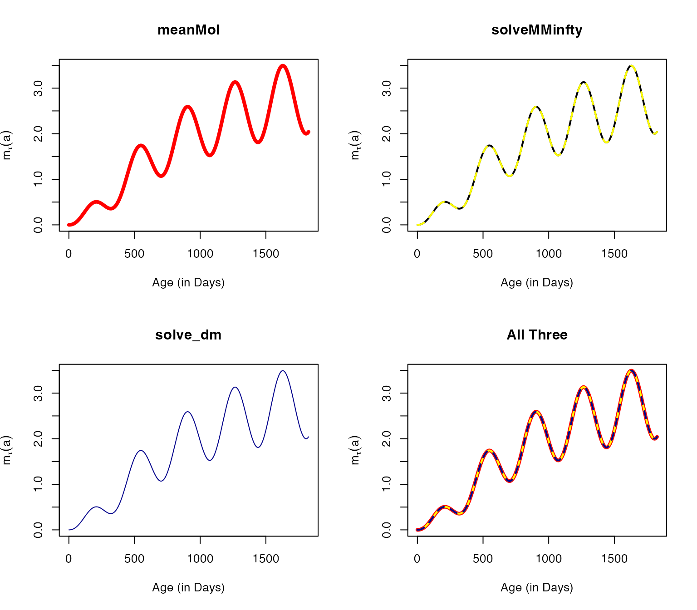
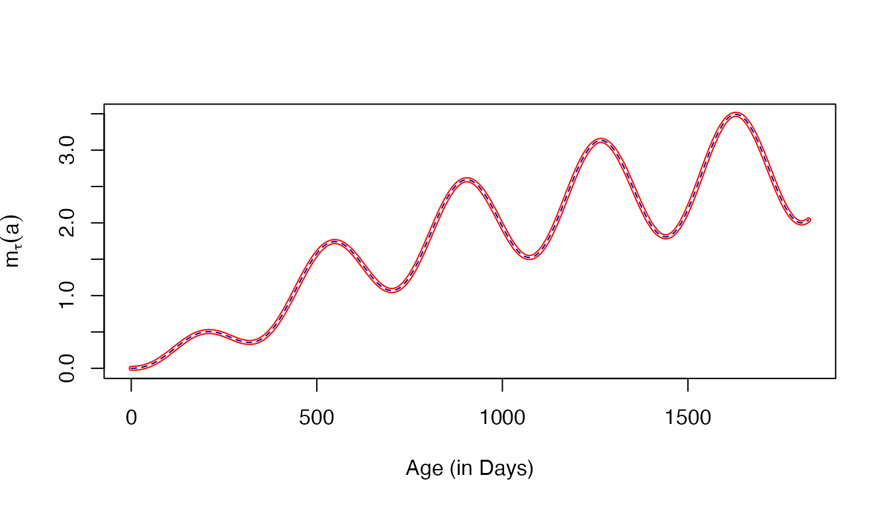

Multiplicity of Infection
MoI.Rmd
suppressMessages(library(pf.memory))
#devtools::load_all() Introduction
The random variable \(M\) describes the distribution of the MoI in a population, which follows a Poisson. Here, we provide a numerical demonstration that this novel computational approach is equivalent to the queuing model \(M/M/\infty\), and that it is also equivalent to hybrid models for the multiplicity of infection (Nåsell, I. 1985)1:
In our manuscript, we define
\[M_\tau(a) \sim f_M(\zeta; a, \tau) = \mbox{Pois}(m_\tau(a))\]
Since \(z_\tau(\alpha, a)\) describes the density of all infections of age \(\alpha\) in a cohort of age \(a\), the density of all infections must be the MoI. Since \(0 \leq \alpha < a\), it must be true that:
\[\begin{equation} m_\tau(a) = \int_0^a z_\tau(\alpha, a) d \alpha \end{equation}\]
\(M/M/\infty\)
Elsewhere, the dynamics of MoI have be described using the queuing model \(M/M/\infty\). The MoI increases with the FoI, and each parasite can clear at some rate, \(r\). The following is a diagram for the changes in the fraction of the population with MoI \(=i\), denoted \(\zeta_i\), change in a host cohort with the force of infection \(h_\tau(a),\) and with clearance.
\[\begin{equation} \begin{array}{ccccccccc} \zeta_0 & {h\atop \longrightarrow} \atop {\longleftarrow \atop r} & \zeta_1 & {h\atop \longrightarrow} \atop {\longleftarrow \atop {2r}} & \zeta_2 & {h \atop \longrightarrow} \atop {\longleftarrow \atop {3r}} & \zeta_3 & {h \atop \longrightarrow} \atop {\longleftarrow \atop {4r}}& \ldots \end{array} \end{equation}\]
The master equations for \(M/M/\infty\) are:
\[\begin{equation}
\begin{array}{rl}
\frac{d\zeta_0}{da} &= -h_\tau(a) \zeta_0 + r \zeta_1 \\
\frac{d\zeta_i}{da} &= -\left( h_\tau\left(a\right) + r i \right)
\zeta_i + h_\tau\left(a\right) \zeta_{i-1} + r\left(i+1\right)
\zeta_{i+1} \\
\end{array}
\end{equation}\]
While the master equations describe an infinite set of equations, to find numerical solutions, we must solve a finite set of equations. We need to compute a maximum MoI that has a vanishingly small portion of the distribution. For a constant \(h\), the steady state distribution of \(\zeta\) is Poisson with mean \(h/r.\) If we set \(N = \max(4h/r,24),\) the tail is negligible. Here, we set the range to \(1 \pm 10^{-7}\) and plot the portion of the distribution covered.
We must define a trace FoI function.
To verify it works, we compute the MoI each day for the first three years of life.
solveMMinfty(3/365, foiP3) -> outWe peek at the distribution of MoI = \(1, \ldots, 5\) on day 500:
Hybrid Model
We can also solve the hybrid equation to get the mean MoI (Nåsell, I. 1985)\(^1\):
\[\frac{dm}{da} = h - rm\]
The unction dmda computes the derivative, and we can
solve the hybrid equation using solve_dm and plot the
output:
solve_dm(3/365, foiP3) -> mt
plot(mt$time, mt$m, type = "l", xlab = "Age (in Days)", ylab = expression(m[tau](a)))
Verification
We have presented three ways of computing the mean MoI using in a cohort as it ages for an arbitrary function \(h_\tau(a)\):
- Using
meanMoIwhich integrateszda:
\[\int_0^a z_\tau(\alpha, a) d\alpha\]
By solving the queuing model \(M/M/\infty\), a compartmental model that tracks the full distribution of the MoI, and then competing the mean:
By solving a hybrid model tracking the mean MoI.
aa = 0:1825
v1 = meanMoI(aa, foiP3, hhat=5/365)
v2 = solveMMinfty(5/365, foiP3, Tmax=1825)$m
v3 = solve_dm(5/365, foiP3, Tmax=1825)[,2]The following plots all three on the same graph using different colors with different widths, colors, and patterns:
par(mfrow = c(2,2))
plot(aa, v1, type = "l", col = "red", lwd=4, xlab = "Age (in Days)", ylab = expression(m[tau](a)), main = "meanMoI")
plot(aa, v2, type = "l", col = "yellow", lwd=2, xlab = "Age (in Days)", ylab = expression(m[tau](a)), main = "solveMMinfty")
lines(aa, v2, type = "l", lwd=1, lty=2)
plot(aa, v3, type = "l", col = "darkblue", lwd=1, xlab = "Age (in Days)", ylab = expression(m[tau](a)), main = "solve_dm")
plot(aa, v1, type = "l", col = "red", lwd=4, xlab = "Age (in Days)", ylab = expression(m[tau](a)), main = "All Three")
lines(aa, v2, type = "l", col = "yellow", lwd = 2)
lines(aa, v3, type = "l", col = "darkblue", lwd = 1, lty =2)
the maximum errors are on the order of \(1e-07\)
## [1] 1.833689e-07 9.797276e-08 1.833689e-07